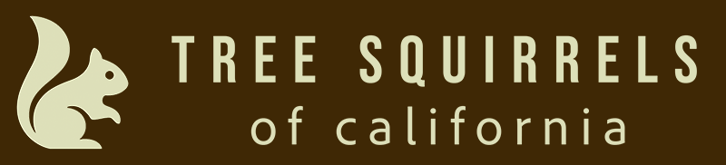

Contact Us
... we'd love to hear from you!
2025 Director: Kelly Durkin
Purpose
Our Educational Focus (in a nutshell)
- Helping you identify California’s four primary tree squirrel species
- Explaining the difference between native and introduced squirrels
- Offering practical tips for peaceful coexistence
- Providing up-to-date information on laws, habitats, and links to other resources
This website was built as a class assignment for the Summer 2025 semester of CS50A at Santa Rosa Junior College, taught by Beaury Foshée. “Tree Squirrels of California” is a fictitious organization. Nonetheless, I have endeavored to be as accurate as possible with all of the information about squirrels, news articles, and hunting information.
